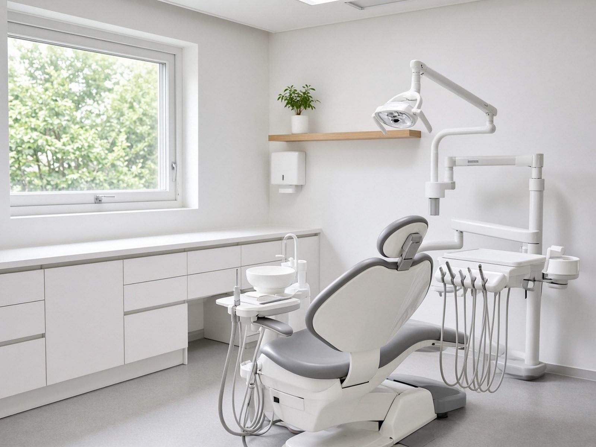
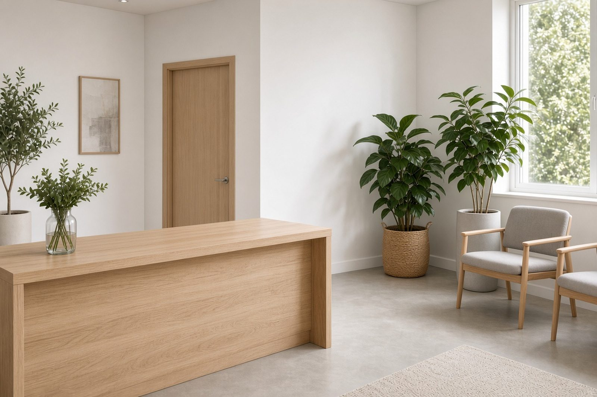
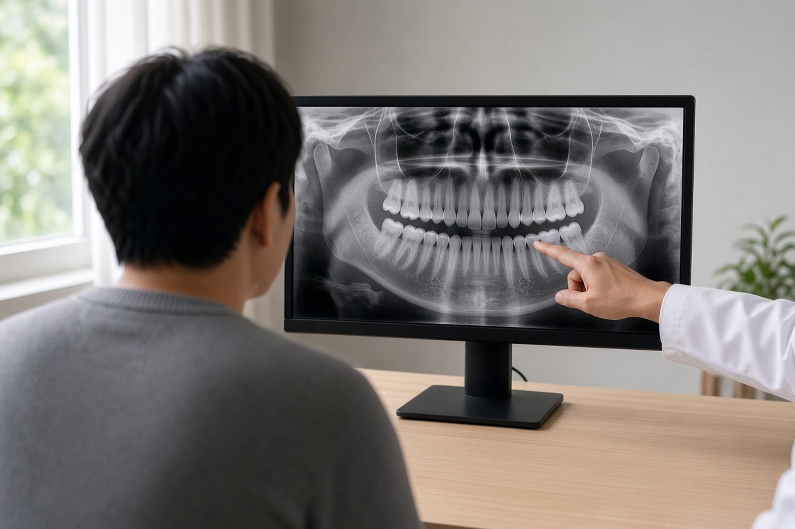
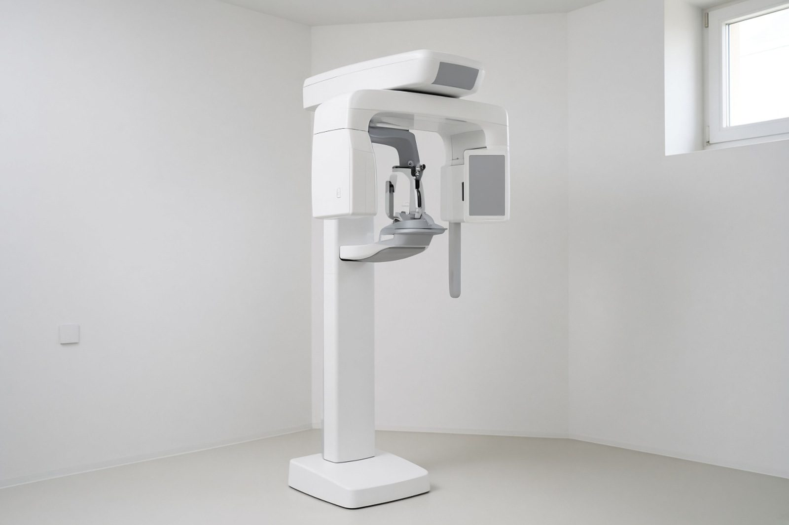

수원 영통 · 치과
필요한 치료만,
필요한 치료만,
충분히 설명하고
시작합니다
영통에서 온 가족이 다니는 동네 치과입니다. 검사 결과를 화면으로 함께 보고, 치료 방법과 비용을 먼저 말씀드린 뒤 진료합니다.



| 평일 | 09:30–18:30 |
|---|---|
| 화·목 야간 | 09:30–20:30 |
| 토요일 | 09:30–14:00 |
| 점심시간 | 13:00–14:00 |
| 일요일·공휴일 | 휴진 |
진료과목
동네에서 필요한 치과 진료를 한곳에서
-
01
임플란트
빠진 치아 자리에 다시 씹을 수 있는 치아를 만듭니다. CT로 잇몸뼈를 먼저 확인하고 계획을 세웁니다.
자세히 -
02
치아교정
고르지 않은 치열과 어긋난 맞물림을 바로잡습니다. 성장기 아이부터 성인까지 상담합니다.
자세히 -
03
충치·신경치료
시리거나 아픈 치아, 깨진 치아를 되도록 뽑지 않고 살리는 쪽으로 치료합니다.
자세히 -
04
소아치과
처음 치과에 오는 아이도 무섭지 않도록 천천히 진료합니다. 불소 도포와 실란트로 충치를 예방합니다.
자세히 -
05
스케일링·예방
건강보험 스케일링(만 19세 이상 연 1회)과 정기검진으로 큰 치료가 필요해지기 전에 살핍니다.
자세히
의료진
정하윤 대표원장
치과보철과 전문의
- 보건복지부 인증 치과보철과 전문의
- 치의학 석사
- 대학병원 치과보철과 수련
- 현 맑은숲치과 대표원장
오래 쓰실 치아이니 서두르지 않겠습니다. 왜 이 치료가 필요한지 이해하실 때까지 설명드리고 시작하겠습니다.
처음 오시는 분
첫 진료는 이렇게 진행됩니다
-
01
접수
신분증을 가지고 오셔서 간단한 문진표를 작성합니다.
-
02
검진
파노라마 엑스레이를 찍고 입안 전체를 살펴봅니다.
-
03
상담
사진을 화면으로 함께 보며 치료 순서와 비용을 안내합니다.
-
04
치료
동의하신 계획대로 날짜를 잡고 진료를 시작합니다.
병원 둘러보기
대기실부터 촬영실, 상담실까지

오시는 길
영통에서 찾아오시는 방법
- 주소
- 경기도 수원시 영통구 OO로 00
- 주차
- 건물 지하주차장 이용, 진료 시 주차 등록해 드립니다
- 버스
- OO정류장 하차 후 도보 O분
- 지하철
- 수인분당선 영통역 O번 출구에서 도보 O분
지도 영역
주소 확정 후 지도를 넣습니다
주소 확정 후 지도를 넣습니다